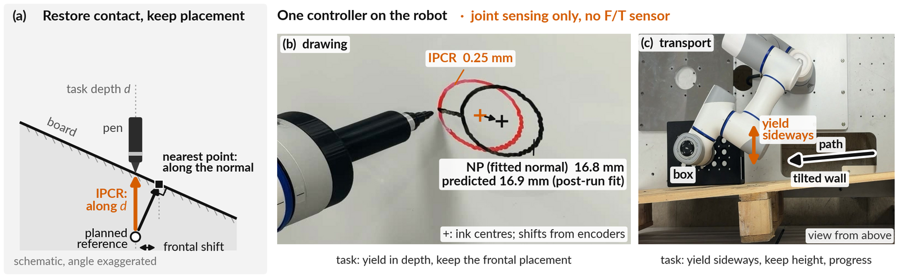

Feasible Is Not Faithful
Intent-Preserving Constraint Realization for Contact Tasks on Unknown Surfaces
School of Mechanical Engineering, Korea University
Paper after submissionCode after reviewRobot videos
Restoring contact is easy.
Keeping what the task meant is a choice.
Robot references come from nominal geometry, and the real contact surface differs from it. On contact the controller must move the infeasible reference somewhere, and many directions restore contact and regulate force equally well. They do not keep the same parts of the task. The common choice, the nearest feasible point with compliance along the normal, shifts a drawn figure and pushes a carried box off its path. Tracking and force errors are measured against the corrected point, so a contact report does not show it.
Intent-preserving constraint realization (IPCR) lets the task decide. The task names a yield subspace and preserved coordinates with , and every correction stays in . One controller does this from joint sensing alone, without a surface normal or a contact switch. On a robot drawing a circle, a square and a star on a board tilted by about 11°, the figure moved mm under IPCR against mm under the nearest-point rule given the fitted normal, of the predicted drift.

Method
Let the task say what may yield
The task names the directions in which motion may depart from the reference, the yield subspace , and the coordinates it must keep, with . The nearest point is the right rule for a task defined on the surface, ; for a task fixed off the surface it moves what should stay.
| Task | may yield | must keep |
|---|---|---|
| Draw at an externally fixed place | depth | frontal position |
| Carry, U-fixed | sideways | progress, height, yaw |
| Carry, U-yaw | sideways, and yaw with the contact moment | progress, height |
| Task on the surface | along the normal | position on the surface |
1 · Target
Correct only inside
The unique point on the estimated constraint that keeps . The nearest point drifts instead, by in the preserved coordinates for one tilted plane.
2 · Execution
Absorb where it cannot leak
A residual absorbed along moves by . It vanishes for every residual if and only if .
3 · Controller
One controller, joint sensing only
A torque-level NMPC tracks the target; the depth follows a force-regulated speed on a joint-torque estimate, weighted by a continuous contact belief. No plane, normal or contact event is estimated. Between drawing and transport only , and the attitude specification change.
The three results in full
Theorem 1 · Intent-preserving realization
is the unique point that satisfies the estimated constraint and keeps . No strict subspace of admits a feasible correction for every residual. Because comes from the task, an error in the estimate affects only whether the target is feasible, never its preserved coordinates.
Theorem 2 · Principal-angle drift
with the principal angles between the constraint normals and . For one plane violated by depth the drift is along the surface, which is in the preserved coordinates. It belongs to the rule, not to estimation error.
Theorem 3 · Leakage law
The preserved coordinates survive every residual if and only if . Exact for the stated quasi-static model.
The absorption direction is set by the servo's compliance on the true constraint, and friction enters as well:
- Compliance only along settles at the IPCR point for any normal estimate and friction, wherever an equilibrium exists.
- Compliance along an estimated normal ignores friction but leaks the residual.
- Isotropic compliance adds a friction drift, and compliance along the sensed force leaks in proportion to friction while sliding.
Re-anchoring the believed surface at the contact, or measuring height along the stroke26, shrinks the residual; absorbing inside closes its route whatever the residual. Our controller uses the second, which matters when a surface from a prior map keeps its error13. The controller runs a torque-level NMPC at 20 Hz over a joint-velocity loop in the drives; the depth speed is , bounded by the path so that the tool is never deeper than the reference, and a contact weight between 0 and 1 scales the pressing while yielding stays on. Sensorless contact control is not new1,3,14; here the task decides where it yields.
Results · real robot
Same board, same figure, two rules
On one board at about 11°, the pen drew a circle, a square and a star at 5 mm/s, IPCR and the nearest point alternating. Both are the same controller, given a different yield direction. The nearest point received the normal fitted to the board; IPCR received neither the board's pose nor its normal. The short black stroke before each black figure is the nearest-point tip sliding from the planned start to its shifted one.
Where the pen went
Shift of every run
| Circle | Square | Star |
|---|
Results · real robot
Change the task, not the controller
The same controller and settings carried a 250 × 200 × 150 mm box along a straight path, past a wall parallel to the path (within 0.6°) and one tilted by 4 to 5°. Transport may yield sideways and must keep progress and height. U-fixed also keeps the yaw; U-yaw lets it yield to the contact moment. One input differs.
Yaw of the box along the tilted wall
- Progress error, every run
- at most mm
- Keep yaw: attitude error
- at most °
- Yaw free: mean yaw on the wall
- °, standard deviation ° in each run
- Sideways yield
- mm keeping yaw, mm with yaw free: letting yaw go did not reduce it here (the walls were not at exactly the same angle)
Results · simulation
Against other structures, on other boards
The same controller in a simulator matched to the robot, with registered criteria ( runs in the comparison, five per cell, 5 mm/s). Every other structure is given the true normal and an ideal force sensor; IPCR is given neither. Each mark is the mean of one board; grey ticks are the shift each rule predicts, .
Shift of the figure, by correction structure
mm mm
IPCR against the six other structures, all boards
measured over predicted shift: nearest point, isotropic and force-direction compliance
/
predictions made before the runs that held on three unseen boards. The first blind set failed of cells; an audit traced it to two input constants.
mm mm
curved boards: IPCR, and the nearest point given the true local normal where it predicts a shift ( of )
Limitations
One tilt. All drawings on the robot are on one board at about 11° (fitted 10.9° and 11.5°).
The prediction is not a forecast. It uses the board normal fitted to an IPCR run on that board, not a value fixed before the runs.
Force is estimated, not sensed, and not bounded. There is no force sensor on the arm. The first touch of the box reached an estimated N, and the cause of the high values is not known yet.
The nearest point carried no box on the robot. That comparison exists only in simulation.
Yaw free wavers. Over the whole slide its yaw varies by ° (standard deviation) and dips to °. Its sideways yield was not smaller than with the yaw kept.
Friction and slip. Pens slip at large approach angles on real surfaces27. Parts of some figures are faint in the videos; they are shown as recorded.
Scope. The guarantee concerns the coordinates the task names and presumes they are named correctly. The theorems idealize the servo: our admittance, filters and NMPC make the absorption direction state-dependent. A curved surface's local attitude is not tracked.
Hardware setup
- Robot
- Dobot CR3A, joint sensing only
- Pen
- spring pen, 5 mm/s, one pass, 12 N target (estimated force)
- Box
- 250 × 200 × 150 mm, 8 N target; parallel and tilted wall, three runs per task and wall
- Runs shown
- drawings (circle 4 and 4, square 3 and 3, star 3 and 3) and carries. Excluded: runs that hit the board during set-up, one stopped by contact with a person and its pair, and box runs cancelled, stopped midway or blocked by a wall placed too far in
References
- Q. Nguyen, Y. Kim, and J. Lee, “Learning reflexive behavior for contact-rich manipulation,” 2026, arXiv:2610.02811.
- J. Hong, D. Song, S. Kim, and M. Seo, “Contact-aware imitation learning through contact factorization,” 2026, arXiv:2610.09533.
- Z. Doulgeri and Y. Karayiannidis, “Force/position regulation for a robot in compliant contact using adaptive surface slope identification,” IEEE Trans. Autom. Control, vol. 53, no. 9, pp. 2116–2122, 2008.
- A. D. Ames, S. Coogan, M. Egerstedt, G. Notomista, K. Sreenath, and P. Tabuada, “Control barrier functions: Theory and applications,” in Proc. Eur. Control Conf., 2019, pp. 3420–3431.
- K. P. Wabersich, A. J. Taylor, J. J. Choi, K. Sreenath, C. J. Tomlin, A. D. Ames, and M. N. Zeilinger, “Data-driven safety filters: Hamilton-Jacobi reachability, control barrier functions, and predictive methods for uncertain systems,” IEEE Control Syst. Mag., vol. 43, no. 5, pp. 137–177, 2023.
- D. Morton and M. Pavone, “Safe, task-consistent manipulation with operational space control barrier functions,” in Proc. IEEE/RSJ Int. Conf. Intell. Robots Syst., 2025.
- R. Römer, A. von Rohr, and A. P. Schoellig, “Diffusion predictive control with constraints,” in Proc. Learn. Dyn. Control Conf., PMLR vol. 283, 2025, pp. 791–803.
- Y. Karayiannidis and Z. Doulgeri, “Blind force/position control on unknown planar surfaces,” IET Control Theory Appl., vol. 3, no. 5, pp. 595–603, 2009.
- Y. Karayiannidis and Z. Doulgeri, “Robot contact tasks in the presence of control target distortions,” Robot. Auton. Syst., vol. 58, pp. 596–606, 2010.
- H. Lipkin and J. Duffy, “Hybrid twist and wrench control for a robotic manipulator,” ASME J. Mech., Trans., Autom. Des., vol. 110, no. 2, pp. 138–144, 1988.
- M. T. Mason, “Compliance and force control for computer controlled manipulators,” IEEE Trans. Syst., Man, Cybern., vol. 11, no. 6, pp. 418–432, 1981.
- J. M. Schimmels and M. A. Peshkin, “Force-assembly with friction,” IEEE Trans. Robot. Autom., vol. 10, no. 4, pp. 465–479, 1994.
- D. Song, J. Park, and Y. J. Kim, “SSK: Robotic pen-art system for large, nonplanar canvas,” IEEE Trans. Robot., vol. 39, no. 4, pp. 3106–3119, 2023.
- H. Shi, S. Hu, Y. Hou, W. Wang, K. Liu, and S. Song, “Minimalist compliance control,” 2026, arXiv:2603.00913.
- M. H. Raibert and J. J. Craig, “Hybrid position/force control of manipulators,” ASME J. Dyn. Syst., Meas., Control, vol. 103, no. 2, pp. 126–133, 1981.
- O. Khatib, “A unified approach for motion and force control of robot manipulators: The operational space formulation,” IEEE J. Robot. Autom., vol. 3, no. 1, pp. 43–53, 1987.
- H. Bruyninckx and J. De Schutter, “Specification of force-controlled actions in the ‘task frame formalism’—a synthesis,” IEEE Trans. Robot. Autom., vol. 12, no. 4, pp. 581–589, 1996.
- J. Duffy, “The fallacy of modern hybrid control theory that is based on ‘orthogonal complements’ of twist and wrench spaces,” J. Robot. Syst., vol. 7, no. 2, pp. 139–144, 1990.
- W. D. Fisher and M. S. Mujtaba, “Hybrid position/force control: A correct formulation,” Int. J. Robot. Res., vol. 11, no. 4, pp. 299–311, 1992.
- R. Featherstone, S. S. Thiebaut, and O. Khatib, “A general contact model for dynamically-decoupled force/motion control,” in Proc. IEEE Int. Conf. Robot. Autom., 1999, pp. 3281–3286.
- J. De Schutter, D. Torfs, H. Bruyninckx, and S. Dutré, “Invariant hybrid force/position control of a velocity controlled robot with compliant end effector using modal decoupling,” Int. J. Robot. Res., vol. 16, no. 3, pp. 340–356, 1997.
- Z. Doulgeri, N. Fahantidis, and A. Konstantinidis, “On the decoupling of position and force controllers in constrained robotic tasks,” J. Robot. Syst., vol. 15, no. 6, pp. 323–340, 1998.
- T. Yoshikawa and A. Sudou, “Dynamic hybrid position/force control of robot manipulators—On-line estimation of unknown constraint,” IEEE Trans. Robot. Autom., vol. 9, no. 2, pp. 220–226, 1993.
- E. Nasiri and L. Wang, “Hybrid force motion control with estimated surface normal for manufacturing applications,” in Proc. Int. Conf. Ubiquitous Robots, 2024, pp. 125–132.
- J. De Schutter et al., “Constraint-based task specification and estimation for sensor-based robot systems in the presence of geometric uncertainty,” Int. J. Robot. Res., vol. 26, no. 5, pp. 433–455, 2007.
- D. Song, T. Lee, and Y. J. Kim, “Artistic pen drawing on an arbitrary surface using an impedance-controlled robot,” in Proc. IEEE Int. Conf. Robot. Autom., 2018, pp. 4085–4090.
- T. Weingartshofer, C. Hartl-Nesic, and A. Kugi, “Automatic and flexible robotic drawing on complex surfaces with an industrial robot,” IEEE Trans. Control Syst. Technol., vol. 32, no. 5, pp. 1602–1615, 2024.
- H. Fang et al., “Force Policy: Learning hybrid force-position control policy under interaction frame for contact-rich manipulation,” in Proc. Robot.: Sci. Syst., 2026.
- Y. Yang et al., “TDC: Sim-to-real transferable directional compliance for contact-rich manipulation,” 2026, arXiv:2602.14174.
- Y. Hou, Z. Liu, C. Chi, E. Cousineau, N. Kuppuswamy, S. Feng, B. Burchfiel, and S. Song, “Adaptive compliance policy: Learning approximate compliance for diffusion guided control,” in Proc. IEEE Int. Conf. Robot. Autom., 2025, pp. 4829–4836.
Works cited on this page, numbered as in the manuscript.
Cite
@unpublished{kim2026ipcr,
title = {Feasible Is Not Faithful: Intent-Preserving Constraint
Realization for Contact Tasks on Unknown Surfaces},
author = {Kim, Jeonghyeon and Park, Shinsuk},
note = {Manuscript in preparation},
year = {2026}
}